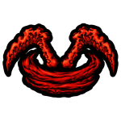
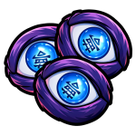
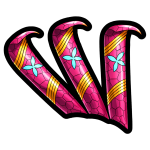
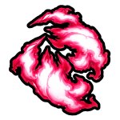
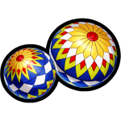

技能树系统
菜单 → 技能树。按已装备 / 已学习内容动态显示分支。下列含技能图标（来自游戏技能配置）。
规则速查
- 技能点：每升 1 级 +3 点（满级 225）。商店可重置技能点。
- 解锁顺序：同分支须先解锁上一节点。
- 战斗技能点价：第 1～5 节点一般为
3 / 6 / 9 / 12 / 15。 - 精通门槛：第 2 起约
14 / 27 / 40 / 53。 - 终极大招：多为第 5 技能（B），需击败对应 Boss。
主页 / 技能树
菜单 → 技能树。按已装备 / 已学习内容动态显示分支。下列含技能图标（来自游戏技能配置）。
3 / 6 / 9 / 12 / 15。14 / 27 / 40 / 53。所有角色都会显示。包含先天技能与属性链。属性节点无精通 / Boss 要求。
| # | 技能 | 技能点 | 冷却 | 体力 | 说明 |
|---|---|---|---|---|---|
| 1 | 二段跳 Double Jump | 3 | 2 | 10 | 空中再跳一次 |
| 2 | 攀墙 Wall Climb | 6 | 2 | — | 需先解锁二段跳 |
满级 225。每级获得 3 技能点。数值为解锁该节点后的累计效果。
| 属性 | 节点数 | 各节点技能点 | 累计效果 |
|---|---|---|---|
| 生命回复速度 | 6 | 3 / 6 / 9 / 12 / 15 / 18 | 1× → 1.15× → 1.3× → 1.45× → 1.6× → 1.75× |
| 最大生命 | 6 | 7 / 16 / 25 / 34 / 43 / 52 | +40 → +115 → +192 → +271 → +352 → +435 |
| 最大体力 | 8 | 4 / 8 / 12 / 16 / 20 / 24 / 28 / 32 | +15 起，逐步提升至约 +176 |
| 体力回复速度 | 6 | 6 / 12 / 18 / 24 / 30 / 36 | 1.17× → 1.32× → 1.46× → 1.58× → 1.7× → 1.8× |
| 格挡值 | 6 | 12 / 24 / 36 / 48 / 60 / 72 | 1 → 约 8.25 |
| 格挡回复 | 4 | 12 / 24 / 36 / 48 | 1× → 约 1.45× |
| 额外伤害 | 5 | 12 / 24 / 36 / 48 / 60 | 0.5 → 约 3.1 |
导师接取见 呼吸法。
猎杀队 / 人类 / 混血 · 终极大招 Boss：Giyen
| # | 技能 | 键 | 技能点 | 精通 | 冷却 | 体力 | Boss |
|---|---|---|---|---|---|---|---|
| 1 | 水面斩 Water Surface Slash | Z | 3 | — | 10 | 14 | — |
| 2 | 漩涡 Whirl Pool | X | 6 | 14 | 13 | 18 | — |
| 3 | 水车 Water Wheel | C | 9 | 27 | 16 | 24 | — |
| 4 | 生生流转 Constant Flux | V | 12 | 40 | 18 | 26 | — |
| 5 | 水面波纹·无静 Dead Calm | B | 15 | 53 | 50 | 35 | Giyen |
猎杀队 / 人类 / 混血 · 终极大招 Boss：Rengu
| # | 技能 | 键 | 技能点 | 精通 | 冷却 | 体力 | Boss |
|---|---|---|---|---|---|---|---|
| 1 | 不知火 Unknowing Fire | Z | 3 | — | 17 | 22 | — |
| 2 | 灼骨炎阳 Blazing Universe | X | 6 | 14 | 14 | 18 | — |
| 3 | 炎天窑变 Flame Undulation | C | 9 | 27 | 15 | 24 | — |
| 4 | 炼狱·炎虎 Flame Tiger | V | 12 | 40 | 20 | 26 | — |
| 5 | 炼狱 Purgatory | B | 15 | 53 | 50 | 35 | Rengu |
猎杀队 / 人类 / 混血 · 终极大招 Boss：Zentaro
| # | 技能 | 键 | 技能点 | 精通 | 冷却 | 体力 | Boss |
|---|---|---|---|---|---|---|---|
| 1 | 霹雳一闪 Thunder Clap and Flash | Z | 3 | — | 12 | 14 | — |
| 2 | 稻魂 Lightning Fold | X | 6 | 14 | 13 | 18 | — |
| 3 | 聚蚊成雷 Rice Spirit | C | 9 | 27 | 17 | 24 | — |
| 4 | 神速 Godspeed | V | 12 | 40 | 18 | 26 | — |
| 5 | 炎响·闪空 Flaming Thunder God | B | 15 | 53 | 50 | 35 | Zentaro |
猎杀队 / 人类 / 混血 · 终极大招 Boss：Saneri
| # | 技能 | 键 | 技能点 | 精通 | 冷却 | 体力 | Boss |
|---|---|---|---|---|---|---|---|
| 1 | 岚气抱树 Mountain Wind | Z | 3 | — | 13 | 18 | — |
| 2 | 净风爪 Purifying Claws | X | 6 | 14 | 12 | 18 | — |
| 3 | 升尘岚 Rising Dust Storm | C | 9 | 27 | 18 | 28 | — |
| 4 | 旋风切割 Whirlwind Cutter | V | 12 | 40 | 17 | 26 | — |
| 5 | 韦陀天台风 Idaten Typhoon | B | 15 | 53 | 50 | 35 | Saneri |
猎杀队 / 人类 / 混血 · 终极大招 Boss：Shinora
| # | 技能 | 键 | 技能点 | 精通 | 冷却 | 体力 | Boss |
|---|---|---|---|---|---|---|---|
| 1 | 复眼六角 Compound Eye Hexagon | Z | 3 | — | 17 | 28 | — |
| 2 | 真蝶 True Flutter | X | 6 | 14 | 16 | 14 | — |
| 3 | 舞蝶之刺 Fluttering Sting | C | 9 | 27 | 18 | 22 | — |
| 4 | 百足曲折 Hundred-Legged Zigzag | V | 12 | 40 | 20 | 26 | — |
| 5 | 幻光 Illusory Light | B | 15 | 53 | 50 | 35 | Shinora |
猎杀队 / 人类 / 混血 · 终极大招 Boss：Obari
| # | 技能 | 键 | 技能点 | 精通 | 冷却 | 体力 | Boss |
|---|---|---|---|---|---|---|---|
| 1 | 蛇斩 Serpent Slash | Z | 3 | — | 15 | 18 | — |
| 2 | 盘绞 Coil Choke | X | 6 | 14 | 18 | 24 | — |
| 3 | 毒牙 Venom Fangs | C | 9 | 27 | 15 | 22 | — |
| 4 | 双头蜿蜒 Twin-Headed Reptile | V | 12 | 40 | 19 | 26 | — |
| 5 | 蜿蜒蛇 Slithering Serpent | B | 15 | 53 | 50 | 35 | Obari |
猎杀队 / 人类 / 混血 · 终极大招 Boss：Tengai
| # | 技能 | 键 | 技能点 | 精通 | 冷却 | 体力 | Boss |
|---|---|---|---|---|---|---|---|
| 1 | 爆响之华 Bursting Bloom | Z | 3 | — | 10 | 14 | — |
| 2 | 轰鸣 Roar | X | 6 | 14 | 13 | 20 | — |
| 3 | 爆珠 Exploding Beads | C | 9 | 27 | 15 | 22 | — |
| 4 | 残响斩 Resounding Slashes | V | 12 | 40 | 20 | 24 | — |
| 5 | 弦之演奏 String Performance | B | 15 | 53 | 50 | 35 | Tengai |
猎杀队 / 人类 / 混血 · 终极大招 Boss：Gyorei
| # | 技能 | 键 | 技能点 | 精通 | 冷却 | 体力 | Boss |
|---|---|---|---|---|---|---|---|
| 1 | 火山征伐 Volcanic Conquest | Z | 3 | — | 12 | 18 | — |
| 2 | 地鸣爆裂 Seismic Burst | X | 6 | 14 | 10 | 14 | — |
| 3 | 升砸 Upper Smash | C | 9 | 27 | 15 | 24 | — |
| 4 | 岩壁 Stone Wall | V | 12 | 40 | 19 | 24 | — |
| 5 | 正义之弧 Arcs of Justice | B | 15 | 53 | 50 | 35 | Gyorei |
成鬼与魔球见 邪恶艺术。
鬼 / 混血 · 终极大招 Boss：Domae
| # | 技能 | 键 | 技能点 | 精通 | 冷却 | 体力 | Boss |
|---|---|---|---|---|---|---|---|
| 1 | Wintry Icicles Wintry Icicles | Z | 3 | — | 15 | 22 | — |
| 2 | Cold White Princesses Cold White Princesses | X | 6 | 14 | 28 | 22 | — |
| 3 | Barren Hanging Garden Barren Hanging Garden | C | 9 | 27 | 16 | 22 | — |
| 4 | Freezing Cloud Freezing Cloud | V | 12 | 40 | 16 | 24 | — |
| 5 | Bodhisattva Bodhisattva | B | 15 | 53 | 50 | 35 | Domae |

血操 (Blood Manipulation)鬼 / 混血 · 终极大招 Boss：Gyutai
| # | 技能 | 键 | 技能点 | 精通 | 冷却 | 体力 | Boss |
|---|---|---|---|---|---|---|---|
| 1 | Bend Bend | Z | 3 | — | 13 | 18 | — |
| 2 | Rampant Arc Rampage Rampant Arc Rampage | X | 6 | 14 | 16 | 22 | — |
| 3 | On Slaught On Slaught | C | 9 | 27 | 16 | 24 | — |
| 4 | Rotating Blood Scythe Rotating Blood Scythe | V | 12 | 40 | 16 | 24 | — |
| 5 | Circular Slashes Circular Slashes | B | 15 | 53 | 50 | 35 | Gyutai |
鬼 / 混血 · 终极大招 Boss：Yahari
| # | 技能 | 键 | 技能点 | 精通 | 冷却 | 体力 | Boss |
|---|---|---|---|---|---|---|---|
| 1 | Arrow Flight Arrow Flight | Z | 3 | — | 10 | 14 | — |
| 2 | Arrow Eruption Arrow Eruption | X | 6 | 14 | 17 | 24 | — |
| 3 | Arrow Smackdown Arrow Smackdown | C | 9 | 27 | 12 | 18 | — |
| 4 | Torrential Arrows Torrential Arrows | V | 12 | 40 | 16 | 24 | — |
| 5 | Koketsu Arrow Koketsu Arrow | B | 15 | 53 | 50 | 35 | Yahari |

梦境 (Dream)鬼 / 混血 · 终极大招 Boss：Enru
| # | 技能 | 键 | 技能点 | 精通 | 冷却 | 体力 | Boss |
|---|---|---|---|---|---|---|---|
| 1 | Melodic Whisper Melodic Whisper | Z | 3 | — | 13 | 18 | — |
| 2 | Ordained Flesh Ordained Flesh | X | 6 | 14 | 16 | 24 | — |
| 3 | Piercing Flesh Piercing Flesh | C | 9 | 27 | 14 | 22 | — |
| 4 | Flesh Barrage Flesh Barrage | V | 12 | 40 | 16 | 24 | — |
| 5 | Flesh Monster Flesh Monster | B | 15 | 53 | 50 | 35 | Enru |

带操 (Obi Manipulation)鬼 / 混血 · 终极大招 Boss：Datai
| # | 技能 | 键 | 技能点 | 精通 | 冷却 | 体力 | Boss |
|---|---|---|---|---|---|---|---|
| 1 | Obi Barrage Obi Barrage | Z | 3 | — | 14 | 20 | — |
| 2 | Obi Pursuit Obi Pursuit | X | 6 | 14 | 12 | 18 | — |
| 3 | Obi Grab Obi Grab | C | 9 | 27 | 14 | 22 | — |
| 4 | Obi Field Obi Field | V | 12 | 40 | 16 | 24 | — |
| 5 | Obi Charge Obi Charge | B | 15 | 53 | 50 | 35 | Datai |
鬼 / 混血 · 终极大招 Boss：Akazo
| # | 技能 | 键 | 技能点 | 精通 | 冷却 | 体力 | Boss |
|---|---|---|---|---|---|---|---|
| 1 | Demon Core Demon Core | Z | 3 | — | 15 | 20 | — |
| 2 | Compass Needle Compass Needle | X | 6 | 14 | 13 | 18 | — |
| 3 | Explosive Fury Explosive Fury | C | 9 | 27 | 16 | 24 | — |
| 4 | Flashing Willow Flashing Willow | V | 12 | 40 | 17 | 24 | — |
| 5 | Annihilation Type Annihilation Type | B | 15 | 53 | 50 | 35 | Akazo |

火焰念动 (Pyrokenesis)鬼 / 混血 · 终极大招 Boss：Rengu
| # | 技能 | 键 | 技能点 | 精通 | 冷却 | 体力 | Boss |
|---|---|---|---|---|---|---|---|
| 1 | Blood Tiles Blood Tiles | Z | 3 | — | 14 | 20 | — |
| 2 | Blood Strike Blood Strike | X | 6 | 14 | 13 | 18 | — |
| 3 | Fiery Slash Fiery Slash | C | 9 | 27 | 16 | 24 | — |
| 4 | Heel Bash Heel Bash | V | 12 | 40 | 17 | 24 | — |
| 5 | Blood Rupture Blood Rupture | B | 15 | 53 | 50 | 35 | Nezura |
鬼 / 混血 · 终极大招 Boss：Reaper
| # | 技能 | 键 | 技能点 | 精通 | 冷却 | 体力 | Boss |
|---|---|---|---|---|---|---|---|
| 1 | Reap Of Despair Reap Of Despair | Z | 3 | — | 13 | 18 | — |
| 2 | Reaptide Reaptide | X | 6 | 14 | 19 | 28 | — |
| 3 | Sonido Sonido | C | 9 | 27 | 10 | 14 | — |
| 4 | Phantom Step Phantom Step | V | 12 | 40 | 18 | 26 | — |
| 5 | Sonido Surge Sonido Surge | B | 15 | 53 | 50 | 35 | Reaper |

玉 (Tamari)鬼 / 混血 · 终极大招 Boss：Sumari
| # | 技能 | 键 | 技能点 | 精通 | 冷却 | 体力 | Boss |
|---|---|---|---|---|---|---|---|
| 1 | Spinning Throw Spinning Throw | Z | 3 | — | 13 | 18 | — |
| 2 |  DunkDunk | X | 6 | 14 | 14 | 20 | — |
| 3 | Piercing Kick Piercing Kick | C | 9 | 27 | 15 | 22 | — |
| 4 | Meteor Meteor | V | 12 | 40 | 18 | 26 | — |
| 5 | Spiraling Shot Spiraling Shot | B | 15 | 53 | 50 | 35 | Sumari |
见习试炼详见任务 / 导师 NPC。技能图标随武器/风格数据补全。
有主动技能的武器成枝；日轮刀系等仅格挡者不成树。
| # | 技能 | 键 | 技能点 | 精通 | 冷却 | 体力 | Boss |
|---|---|---|---|---|---|---|---|
| 1 | Flash Fist Flash Fist | — | 3 | — | 12 | 20 | — |
| 2 | Shatter Step Shatter Step | — | 6 | 14 | 15 | 24 | — |
| 3 | Shoulder Throw Shoulder Throw | — | 9 | 27 | 14 | 22 | — |
| # | 技能 | 键 | 技能点 | 精通 | 冷却 | 体力 | Boss |
|---|---|---|---|---|---|---|---|
| 1 | Execution Scyther Execution Scyther | — | 3 | — | 18 | 28 | — |
| 2 | Scyther Vortex Scyther Vortex | — | 6 | 14 | 15 | 24 | Hoyuzo |
| # | 技能 | 键 | 技能点 | 精通 | 冷却 | 体力 | Boss |
|---|---|---|---|---|---|---|---|
| 1 | Reaper Slash Reaper Slash | — | 3 | — | 13 | 20 | — |
| 2 | Blood Lust Blood Lust | — | 6 | 14 | 20 | 30 | — |
| # | 技能 | 键 | 技能点 | 精通 | 冷却 | 体力 | Boss |
|---|---|---|---|---|---|---|---|
| 1 | TriClaw Reversal TriClaw Reversal | — | 3 | — | 12 | 18 | — |
| 2 | Predator Claws Predator Claws | — | 6 | 14 | 14 | 22 | Kaiden |
| # | 技能 | 键 | 技能点 | 精通 | 冷却 | 体力 | Boss |
|---|---|---|---|---|---|---|---|
| 1 | War Gale Wind War Gale Wind | — | 3 | — | 14 | 22 | — |
| 2 | War Chant War Chant | — | 6 | 14 | 20 | 16 | — |
| # | 技能 | 键 | 技能点 | 精通 | 冷却 | 体力 | Boss |
|---|---|---|---|---|---|---|---|
| 1 | Storm Rush Storm Rush | — | 3 | — | 18 | 28 | — |
| 2 | Storm Piercer Storm Piercer | — | 6 | 14 | 14 | 22 | — |
| # | 技能 | 键 | 技能点 | 精通 | 冷却 | 体力 | Boss |
|---|---|---|---|---|---|---|---|
| 1 | Phantom Barrage Phantom Barrage | — | 3 | — | 14 | 22 | — |
| 2 | Spiral Fang Spiral Fang | — | 6 | 14 | 9 | 14 | — |
| 3 | Tanto Descent Tanto Descent | — | 9 | 27 | 14 | 22 | — |
| # | 技能 | 键 | 技能点 | 精通 | 冷却 | 体力 | Boss |
|---|---|---|---|---|---|---|---|
| 1 | Floating Grace Floating Grace | — | 3 | — | 15 | 24 | — |
| 2 | Pale Petals Pale Petals | — | 6 | 14 | 20 | 30 | — |
| 3 | Shade Breaker Shade Breaker | — | 9 | 27 | 14 | 22 | — |
| # | 技能 | 键 | 技能点 | 精通 | 冷却 | 体力 | Boss |
|---|---|---|---|---|---|---|---|
| 1 | Buck Shot Buck Shot | — | 3 | — | 12 | 20 | — |
| 2 | Point Blank Point Blank | — | 6 | 14 | 14 | 22 | — |
| 3 | Shellshock Frenzy Shellshock Frenzy | — | 9 | 27 | 16 | 26 | — |